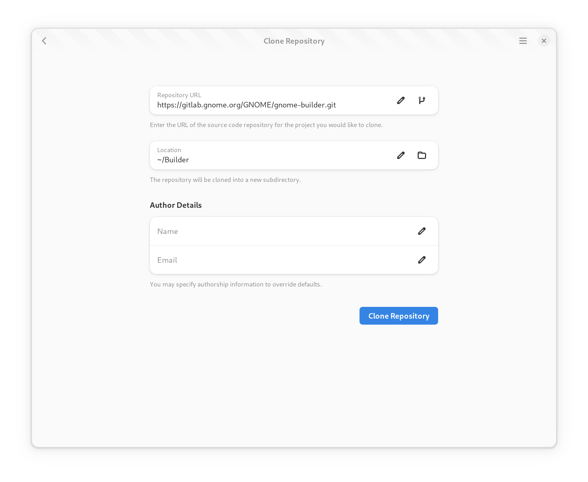

Creating and Importing Projects
Builder supports creating new projects and importing existing projects. When importing a project, you can either open it from your local computer or clone it from a remote git repository.
Creating a new Project
To create a new project, select “New” from the project greeter. The project creation guide will be displayed.

Give your project a meaningful name, as this is not easily changeable later. The project name should not include spaces and if the project needs multiple words, use a hyphen “-” to separate the words.
Choose the language you would like to use for the project. Depending on the language, different templates are available.
Choosing a license helps promote sharing of your application. Builder is licensed as GPLv3 or newer and we suggest using GPLv3 when writing new applications for GNOME.
If you do not want git-based version control, turn off the switch to disable git support.
Lastly, select a suitable template for your application. Some patterns are available to speed up the bootstrapping of your project.
Cloning an Existing Project
To clone an existing project, you will need the URL of your git repository.
For example, to clone the Builder project, you could specify: https://gitlab.gnome.org/GNOME/gnome-builder.git.

After entering the URL, press the “Clone” button and wait for the operation to complete. You’ll be provided progress updates during the operation. Once the project has been cloned, a new workspace window will be opened for the project.
Note
If the remote repository requires authorization a dialog will be displayed for you to input your credentials.